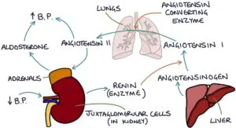
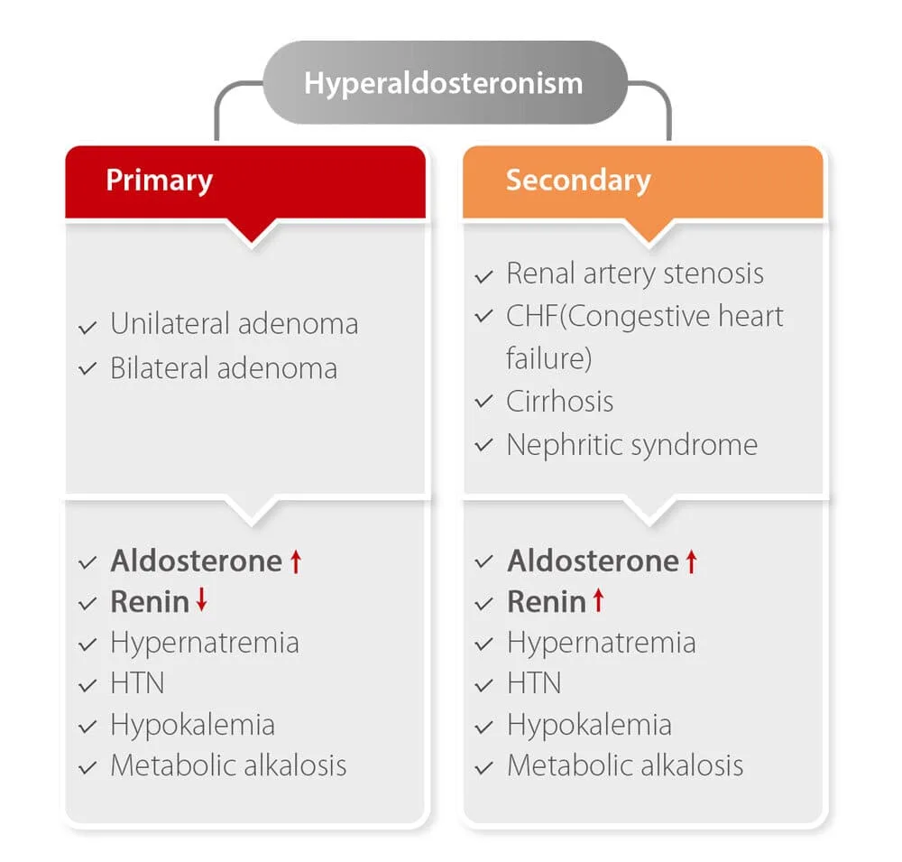

Expanded Nursing Uganda Explanation
Hyperaldosteronism should be understood beyond a short definition. Link the concept to patient history, focused assessment, common risks, nursing priorities, documentation and evaluation of outcomes.
01 Hyperaldosteronism
Aldosteronism refers to an abnormal excess of aldosterone, a hormone produced by the adrenal glands. Aldosterone plays a big role in regulating sodium and water balance in the body, thereby influencing blood pressure .
Aldosterone is a major mineralocorticoid hormone produced by the adrenal gland , in the zona glomerulosa , which is the outermost layer of the adrenal cortex. Aldosterone plays an important role in the regulation of sodium and water in the body, thereby maintaining and having an effect on blood pressure.
It is a type under ALDOSTERONISM, so therefore, let’s start from the very beginning.
02 Types of Aldosteronism
Aldosteronism is broadly classified into two categories:
This condition is characterized by excessive aldosterone production due to a problem within the adrenal glands themselves . This leads to sodium retention, potassium loss, and ultimately, a combination of hypokalemia (low potassium) and hypertension.
a) Causes :
- Adrenal Adenoma (Conn’s Syndrome): This is the most common cause of primary hyperaldosteronism, accounting for approximately 60% of cases. It involves a benign tumor in the adrenal gland, leading to overproduction of aldosterone.
b) Clinical Presentation:
- Hypertension : This is the most common symptom, often resistant to traditional antihypertensive medications.
- Hypokalemia (<3.5 mmol/L): This is a characteristic feature, often leading to muscle weakness, fatigue, and even cramps or tetany (involuntary muscle contractions).
- Nocturia : Frequent urination at night due to increased fluid retention.
- Metabolic Alkalosis : The excess aldosterone can cause an imbalance in the body’s pH, leading to metabolic alkalosis.
- Other Symptoms : Headaches, polydipsia (excessive thirst), and muscle weakness.
c) Diagnosis :
- Elevated Serum Aldosterone : Measurement of aldosterone levels in the blood is the primary diagnostic tool.
- Low Plasma Renin Activity: As aldosterone secretion is independent of renin in this case, renin levels are typically low.
- Salt Loading Test : This test involves a high-salt diet followed by measurement of aldosterone levels. In primary aldosteronism, aldosterone levels remain elevated despite salt loading.
- Renin-Aldosterone Stimulation Test : This test involves stimulating the renin-angiotensin system and assessing the response of aldosterone levels.
- Imaging Studies : CT scan and MRI can be used to visualize the adrenal glands and identify any tumors.
d) Treatment and Management :
Surgical Removal ( Adrenalectomy ) : This is the definitive treatment for adrenal adenomas, aiming to remove the tumor and restore normal aldosterone levels.
Medical Management :
- Aldosterone Antagonists : Spironolactone (100-400mg daily) and eplerenone are effective in blocking the action of aldosterone and correcting hypokalemia.
- Calcium Channel Blockers: Nefidipine can be used to control hypertension.
- Steroid Replacement (Post-Surgery) : Following adrenalectomy, patients may require lifelong steroid replacement therapy to prevent adrenal insufficiency. This may include medications such as:
- Hydrocortisone (Cortef)
- Cortisone acetate (Cortate)
- Prednisone (Deltasone)
- Prednisolone (Prelone)
- Triamcinolone (Kenalog)
- Betamethasone (Celestone)
- Fludrocortisone (Florinef)
- Fluid Management: Maintaining adequate fluid intake is important, especially following surgery.
- Blood Sugar Monitoring : Regular monitoring of blood sugar is recommended due to potential effects on glucose metabolism.
This condition occurs when there is an increase in aldosterone production as a result of factors outside the adrenal glands . It is essentially a compensatory mechanism triggered by other conditions that lead to increased renin activity.
a) Common Causes:
- Renovascular Hypertension : Narrowing of the renal arteries, leading to reduced blood flow to the kidneys and activating the renin-angiotensin-aldosterone system.
- Heart Failure : The heart’s inability to effectively pump blood can lead to reduced blood flow to the kidneys, triggering renin release.
- Cirrhosis : Liver disease can impair the synthesis of renin, causing a compensatory increase in aldosterone.
- Nephrotic Syndrome : This condition involves protein loss in urine, which can activate the renin-angiotensin-aldosterone system.
- Malnutrition : Prolonged malnutrition can lead to a decrease in circulating sodium, triggering the renin-angiotensin-aldosterone system.
- Pregnancy : During pregnancy, there is a natural increase in aldosterone levels.
b) Treatment :
Treatment for secondary hyperaldosteronism focuses on addressing the underlying cause:
- Angiotensin-Converting Enzyme (ACE) Inhibitors : Captopril, enalapril, etc., are effective in blocking the production of Angiotensin II, which in turn reduces aldosterone levels.
- Angiotensin II Receptor Blockers (ARBs) : Losartan, etc., block the action of Angiotensin II, lowering blood pressure and aldosterone levels.
- Spironolactone : Can be used to directly block the action of aldosterone.
03 Complications of Aldosteronism:
High Blood Pressure Complications : Persistent hypertension can lead to:
- Heart attack
- Heart failure
- Stroke
- Kidney disease or failure
Hypokalemia (Low Blood Potassium) : Can cause:
- Arrhythmias (irregular heartbeats)
- Muscle cramps
- Weakness
- Fatigue
- Paralysis
Other Complications :
- Metabolic alkalosis
- Kidney stones
- Bone loss
- Diabetes
04 Nursing Care Plan: Hyperaldosteronism
Patient Data: A patient diagnosed with hyperaldosteronism presents with hypertension , muscle weakness , fatigue , polyuria , polydipsia , and hypokalemia . Lab results show elevated aldosterone levels , low potassium levels , and metabolic alkalosis .
- Assessment Nursing Diagnosis Goals/Expected Outcomes Nursing Interventions Rationale Evaluation
- Patient presents with persistent hypertension, headache, blurred vision, and increased blood pressure readings. Decreased Cardiac Output related to hypertension and electrolyte imbalance as evidenced by elevated BP (e.g., 160/100 mmHg), palpitations, and headache. – Patient’s blood pressure will be maintained within normal limits. – Patient will verbalize understanding of hypertension management. – Patient will adhere to prescribed antihypertensive medications. 1. Monitor blood pressure, heart rate, and signs of hypertensive crisis. 2. Administer prescribed antihypertensive medications (e.g., spironolactone, calcium channel blockers). 3. Educate the patient on lifestyle modifications (low-sodium diet, weight control). 4. Monitor for complications like left ventricular hypertrophy and heart failure. 5. Prepare the patient for surgical adrenalectomy if indicated. 1. Prevents complications from sustained hypertension. 2. Spironolactone blocks aldosterone effects and helps control BP. 3. Lifestyle changes enhance BP control and prevent worsening of symptoms. 4. Early detection prevents cardiac complications. 5. Surgery may be necessary for aldosterone-secreting tumors (Conn’s syndrome). – Patient maintains stable BP without complications. – Patient verbalizes adherence to lifestyle and medication regimen.
- Patient has hypokalemia as evidenced by muscle weakness, fatigue, leg cramps, and ECG changes. Impaired water- electrolyte Imbalance related to excessive aldosterone secretion as evidenced by serum potassium <3.5 mEq/L and muscle weakness. – Patient’s potassium levels will return to normal (3.5–5.0 mEq/L). – Patient will demonstrate knowledge of potassium-rich dietary sources. – Patient will remain free from cardiac arrhythmias. 1. Monitor serum potassium levels and ECG for arrhythmias. 2. Administer potassium supplements as prescribed. 3. Encourage potassium-rich foods (bananas, oranges, spinach). 4. Educate about the importance of medication adherence (spironolactone to conserve potassium). 5. Monitor urinary output and renal function. 1. Hypokalemia can cause life-threatening arrhythmias. 2. Corrects potassium deficit and prevents complications. 3. Helps maintain normal potassium levels naturally. 4. Spironolactone prevents potassium loss by blocking aldosterone. 5. Ensures potassium is not lost excessively through urine. – Patient maintains normal potassium levels. – No signs of arrhythmias or muscle weakness. – Patient adheres to dietary recommendations.
- Patient reports excessive thirst (polydipsia) and frequent urination (polyuria). Inadequate Fluid Volume related to excessive urinary loss due to aldosterone excess as evidenced by increased urine output and dehydration signs. – Patient’s fluid balance will be maintained. – Patient will report decreased thirst and normal urine output. – Patient’s serum sodium and potassium levels will remain within normal limits. 1. Monitor intake and output, daily weights, and signs of dehydration. 2. Encourage adequate fluid intake unless contraindicated. 3. Administer IV fluids (e.g., isotonic saline) if severe dehydration occurs. 4. Educate patient on fluid replacement strategies. 5. Monitor serum sodium levels to prevent hypernatremia. 1. Early detection of dehydration prevents complications. 2. Prevents dehydration-related symptoms. 3. IV fluids help restore intravascular volume. 4. Prevents excessive thirst and compensatory fluid loss. 5. Prevents sodium imbalances that can worsen symptoms. – Patient maintains normal hydration. – No signs of excessive thirst or dehydration. – Serum sodium remains stable.
- Patient expresses anxiety about condition and potential need for surgery. Excessive Anxiety related to uncertainty about disease and treatment as evidenced by patient verbalizing concerns about long-term health and surgery. – Patient will verbalize reduced anxiety. – Patient will demonstrate understanding of the condition and treatment. – Patient will actively participate in care decisions. 1. Assess anxiety level and provide emotional support. 2. Educate the patient on hyperaldosteronism, treatment options, and expected outcomes. 3. Encourage expression of fears and concerns. 4. Provide information on surgical adrenalectomy if indicated. 5. Offer relaxation techniques (deep breathing, guided imagery). 1. Helps identify the patient’s emotional needs. 2. Increases understanding and reduces fear of the unknown. 3. Promotes coping and psychological well-being. 4. Helps patient make informed treatment decisions. 5. Helps reduce stress and its physiological effects. – Patient verbalizes reduced anxiety. – Patient demonstrates understanding of condition. – Patient actively participates in treatment.
- Patient reports difficulty engaging in daily activities due to muscle weakness and fatigue. Activity Intolerance related to hypokalemia-induced muscle weakness as evidenced by patient reporting fatigue and inability to perform normal activities. – Patient will report improved energy levels. – Patient will tolerate activities of daily living without excessive fatigue. – Patient will participate in gradual activity progression. 1. Assess muscle strength, fatigue levels, and ability to perform daily activities. 2. Encourage rest periods between activities. 3. Provide a potassium-rich diet and encourage adherence to medications. 4. Assist with activities as needed but encourage independence. 5. Monitor for muscle cramps, arrhythmias, and weakness progression. 1. Identifies severity of fatigue and weakness. 2. Prevents overexertion and worsening of symptoms. 3. Correcting potassium levels restores muscle function. 4. Promotes independence while ensuring safety. 5. Early detection prevents severe complications. – Patient tolerates daily activities without excessive fatigue. – Muscle strength improves. – No signs of severe weakness or arrhythmias.
NANDA 2024-26
Considerations
- Medications : Spironolactone (Aldactone) as first-line treatment; Eplerenone as an alternative.
- Surgical Treatment : Adrenalectomy for patients with unilateral adrenal adenomas.
- Dietary Modifications : Potassium-rich, low-sodium diet to counteract aldosterone effects.
- Monitoring : BP, electrolytes, renal function, and cardiac status.
05 Nursing Uganda Clinical Lens
Use Hyperaldosteronism as a practical nursing topic, not only a memorized definition. Start with normal structure and function, then connect it to assessment findings and disease.
- What to understand first: define hyperaldosteronism, identify the normal or expected pattern, then explain what changes when the patient is unwell.
- Why it matters in care: the nurse must recognize risk early, explain findings clearly, document accurately and know when to escalate.
- How to revise it: connect each point to assessment, nursing diagnosis or care problem, intervention, rationale and evaluation.
06 Assessment Guide
- Relevant inspection, palpation, movement, auscultation, vital signs or neurological checks.
- Normal findings, abnormal findings and what each abnormality may indicate.
- Patient history, risk factors and how the body system affects other systems.
07 Nursing Priorities, Rationales and Outcomes
- Use anatomy to explain symptoms and guide focused assessment.
- Recognize findings that need urgent escalation.
- Teach the patient using simple body-system language.
The rationale for these priorities is patient safety: nursing actions should prevent deterioration, reduce discomfort, support recovery and create clear evidence for the next caregiver.
- Expected outcome: The learner can explain normal function, identify abnormal signs and connect them to nursing action.
08 Patient Teaching and Revision Check
- Explain hyperaldosteronism in simple language the patient or caregiver can repeat back.
- Teach warning signs, medicine or follow-up instructions, hygiene or lifestyle points where relevant.
- For exams, prepare a short answer using: definition, causes or risk factors, signs, assessment, management, complications and prevention.
- For ward practice, document baseline findings, actions taken, patient response and the plan for review.
Illustrations and Diagrams (4)




Related Video Lectures
Watch nursing lecture videos on YouTube for this topic. Opens in a new tab.
Watch on YouTubeExternal link: YouTube may use its own cookies and terms. Nursing Uganda is not affiliated with YouTube.